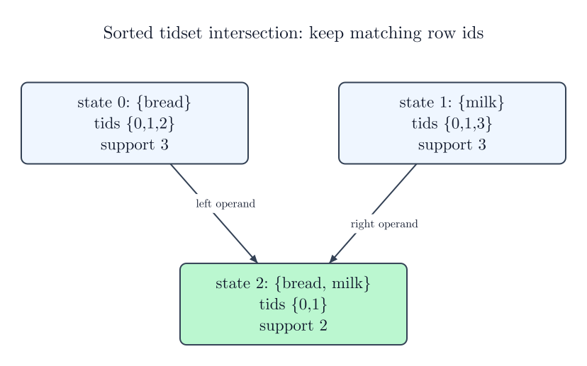
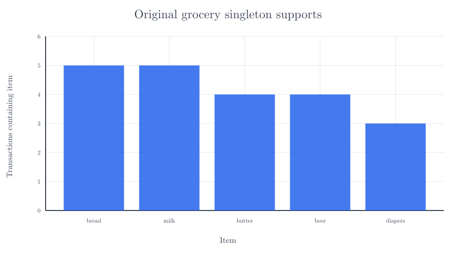
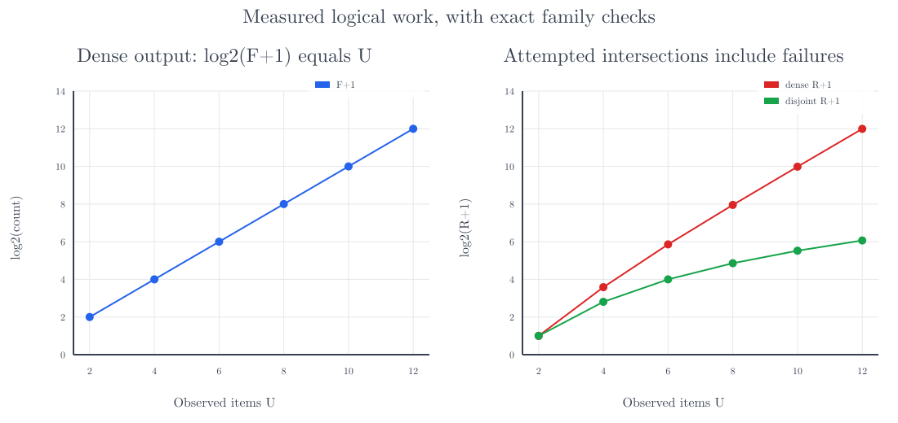
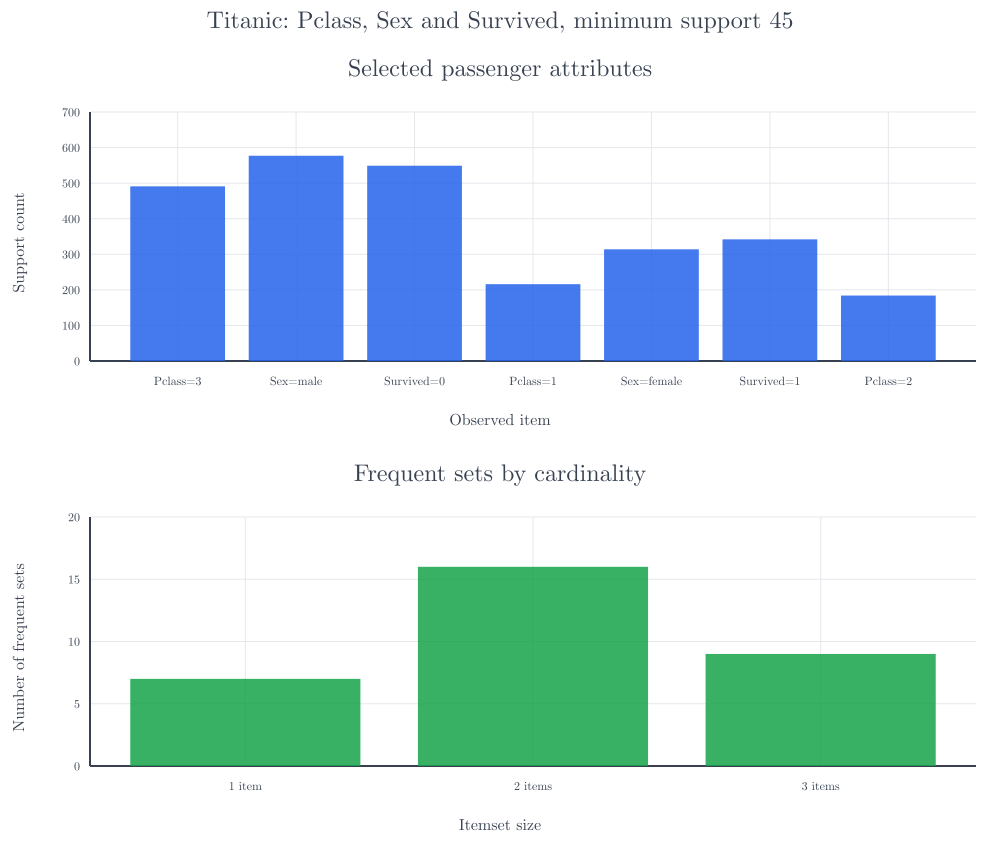
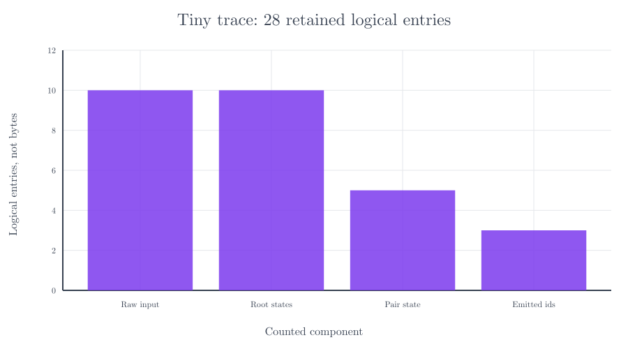

Eclat: Actual Tidset Intersections and Frequent Itemsets
Abstract
Given baskets of items and a minimum count, we want every nonempty item combination that occurs in enough baskets. The number of answers can be exponential, and counting every candidate by another database scan wastes work. Eclat instead stores the row indices containing each item and intersects these sorted tidsets while extending frequent prefixes. We inspect actual conditional intersections, preserve the original grocery example, check exact dense and disjoint work families, and mine the canonical Titanic table. Zero support and capture limits are explicit.
Begin with an intersection you can check
Number the baskets from zero: {bread,milk}, {bread,milk}, {bread}, {milk}. The bread tidset is {0,1,2}; milk's is {0,1,3}. Their intersection is {0,1}, so the pair's support is two. At minimum support two, both singletons and the pair survive. Raising the threshold to three prunes the pair while retaining both singletons.
The following native diagram uses the actual root and child states of one mining run. The trace captures intersections during mining, rather than constructing a second explanation after the result is known.
#include <dm/dm.hpp>
int main(){
std::filesystem::create_directories("build");
const std::vector<std::vector<std::size_t>> baskets{{0,1},{0,1},{0},{1}};
const auto t=dm::algorithms::eclat_trace(baskets,2);
const std::vector<std::string> labels{"bread","milk"};
std::print("Tiny: {} frequent sets; {} intersection; {} merge steps; {} captured entries.\n\n",t.itemsets.size(),t.work.intersections,t.work.intersection_steps,t.captured_entries);
std::print("| state | itemset | tids | support | frequent |\n| ---: | :--- | :--- | ---: | :--- |\n");
dm::graphics::Diagram d(64,1050);dm::graphics::DiagramNodeStyle box;box.width=5;box.height=1.8;box.font_size=23;
for(std::size_t i=0;i<t.states.size();++i){const auto& s=t.states[i];std::string tids;
for(auto id:s.tids){if(!tids.empty())tids+=",";tids+=std::to_string(id);}
std::print("| {} | {} | {} | {} | {} |\n",i,dm::algorithms::itemset_label(s.itemset.items,labels),tids,s.itemset.support,s.frequent);
const dm::graphics::DiagramPoint at=i==0?dm::graphics::DiagramPoint{0,0}:i==1?dm::graphics::DiagramPoint{7,0}:dm::graphics::DiagramPoint{3.5,-4};
if(i==2)box.fill={187,247,208};
d.node(std::to_string(i),at,std::format("state {}: {}\ntids {{{}}}\nsupport {}",i,dm::algorithms::itemset_label(s.itemset.items,labels),tids,s.itemset.support),box);
}
const auto& pair=t.states.at(2);
d.edge(std::to_string(pair.left),"2","left operand").edge(std::to_string(pair.right),"2","right operand")
.text({3.5,2},"Sorted tidset intersection: keep matching row ids",25).save_svg("build/eclat_tiny.svg");
const auto stricter=dm::algorithms::eclat_trace(baskets,3);
std::print("\nThreshold three: {} frequent sets; attempted pair support {}; pair kept {}.\n",stricter.itemsets.size(),stricter.states.at(2).itemset.support,stricter.states.at(2).frequent);
}Tiny: 3 frequent sets; 1 intersection; 3 merge steps; 28 captured entries.
| state | itemset | tids | support | frequent |
|---|---|---|---|---|
| 0 | {bread} | 0,1,2 | 3 | true |
| 1 | {milk} | 0,1,3 | 3 | true |
| 2 | {bread, milk} | 0,1 | 2 | true |
Threshold three: 2 frequent sets; attempted pair support 2; pair kept false.

Derive the vertical search
Let D be the sequence of N baskets and U the number of distinct observed items. For an itemset X, define T(X)={i : X is a subset of D_i}. Item support is T(X), an absolute row count rather than a proportion. Repeated baskets are distinct rows; repeated item ids within one basket contribute only once. Empty baskets retain their row indices. No empty itemset is returned.
For any prefix P and distinct extensions a<b,
A row belongs to the intersection exactly when it contains both operand sets, hence their union. Sorted tidsets allow a merge: advance the smaller head, or emit an equal head and advance both. Each paired-head step advances at least one cursor, giving O(L+R) work for an intersection. The implementation counts those loop steps, not individual machine comparisons or elapsed time.
Downward closure gives T(X union {a})<=T(X). If X is infrequent, every extension is infrequent and can be pruned. Starting with observed singletons in ascending item-id order, emit a frequent prefix, form its conditional extensions against later siblings, and descend. Increasing ids give each nonempty subset a unique path. Induction over that path establishes completeness; the intersection identity establishes support correctness. At threshold zero, pruning disappears and every nonempty subset of the observed universe is returned, even with zero support.
The core uses explicit DFS frames. It forms all sibling intersections before descending, preserving the original recursive schedule. Trace state creation order therefore differs from its emitted-state order. The ordinary API returns canonical size/lexicographic order; it retains no optional intersection history. Both calls use the same kernel.
Preserve the original grocery example
The original eight baskets contain bread, milk, butter, beer and diapers. The vertical-layout API now owns the normalization and row-index work that previously lived in this report. The table lists every result at minimum support two; the figure shows singleton supports. Apriori and FP-growth are independent positive-threshold cross-checks here.
#include <dm/dm.hpp>
int main(){
std::filesystem::create_directories("build");
const std::vector<std::vector<std::size_t>> baskets{{0,1,2},{0,1},{1,2},{0,1,2},{3,4},{0,3,4},{3,4},{0,1,2,3}};
const std::vector<std::string> labels{"bread","milk","butter","beer","diapers"};
const auto vertical=dm::algorithms::vertical_tidsets(baskets);
const auto t=dm::algorithms::eclat_trace(baskets,2);
std::vector<double> counts;
std::print("| singleton | original transaction ids | support |\n| :--- | :--- | ---: |\n");
for(const auto& root:vertical){std::print("| {} |",labels.at(root.item));for(auto id:root.tids)std::print(" {}",id);std::print(" | {} |\n",root.tids.size());counts.push_back(root.tids.size());}
std::print("\n| frequent itemset | support |\n| :--- | ---: |\n");
for(const auto& f:t.itemsets)std::print("| {} | {} |\n",dm::algorithms::itemset_label(f.items,labels),f.support);
const auto as_map=[](const auto& sets){std::map<std::vector<std::size_t>,std::size_t> out;for(const auto& f:sets)out.emplace(f.items,f.support);return out;};
const bool apriori=as_map(t.itemsets)==as_map(dm::algorithms::apriori_frequent_itemsets(baskets,2));
const bool fp=as_map(t.itemsets)==as_map(dm::algorithms::fp_growth_frequent_itemsets(baskets,2));
if(!apriori||!fp)throw std::runtime_error("miner disagreement");
std::print("\nOriginal groceries: {} sets; Apriori agrees {}; FP-growth agrees {}; {} actual intersections; {} matched tids; {} captured entries.\n",t.itemsets.size(),apriori,fp,t.work.intersections,t.work.matched_tids,t.captured_entries);
for(std::size_t id=0;id<t.states.size();++id){const auto& s=t.states[id];
if(s.itemset.items==std::vector<std::size_t>{0,1,2}||s.itemset.items==std::vector<std::size_t>{3,4}){
std::print("State {}: {} intersect {} gives {}, support {}; tids",id,dm::algorithms::itemset_label(t.states.at(s.left).itemset.items,labels),dm::algorithms::itemset_label(t.states.at(s.right).itemset.items,labels),dm::algorithms::itemset_label(s.itemset.items,labels),s.itemset.support);
for(auto tid:s.tids)std::print(" {}",tid);std::print(".\n");}}
std::print("DFS state visits:");for(auto id:t.emitted)std::print(" {}",id);std::print(".\n");
auto p=dm::graphics::RPlot::create();p.barplot(counts,labels,"",{37,99,235}).title("Original grocery singleton supports").x_label("Item").y_label("Transactions containing item").y_limits(0,6).size(900,500).save_svg("build/eclat_groceries.svg");
}| singleton | original transaction ids | support |
|---|---|---|
| bread | 0 1 3 5 7 | 5 |
| milk | 0 1 2 3 7 | 5 |
| butter | 0 2 3 7 | 4 |
| beer | 4 5 6 7 | 4 |
| diapers | 4 5 6 | 3 |
| frequent itemset | support |
|---|---|
| {bread} | 5 |
| {milk} | 5 |
| {butter} | 4 |
| {beer} | 4 |
| {diapers} | 3 |
| {bread, milk} | 4 |
| {bread, butter} | 3 |
| {bread, beer} | 2 |
| {milk, butter} | 4 |
| {beer, diapers} | 3 |
| {bread, milk, butter} | 3 |
Original groceries: 11 sets; Apriori agrees true; FP-growth agrees true; 13 actual intersections; 24 matched tids; 137 captured entries. State 9: {bread, milk} intersect {bread, butter} gives {bread, milk, butter}, support 3; tids 0 3 7. State 17: {beer} intersect {diapers} gives {beer, diapers}, support 3; tids 4 5 6. DFS state visits: 0 5 9 6 7 1 12 2 3 17 4.

The triple's operands are {bread,milk} and {bread,butter}, sharing the bread prefix. Intersecting their tids gives rows {0,3,7}, support three. These are actual operands recorded by the run. A trace built instead by intersecting each prefix with the original singleton could recover the same support, but would describe a different sequence of operations. Here creation of sibling states precedes descending to state 9, so DFS emits 0,5,9,6,7,... rather than simply walking the state vector.
Check exact work families and the output barrier
For N identical baskets containing all U items, every nonempty subset is frequent whenever 1<=minimum support<=N. There are F=2^U−1 outputs. Each nonsingleton is formed by exactly one intersection, so R=F−U. Both operand tidsets contain every row. Thus merge steps and matched tids both equal N·R, and peak DFS frames equal U. Explicit frames avoid call-stack recursion; they cannot avoid exponential output.
For U disjoint singleton baskets at threshold one, only U singleton outputs survive. All U(U−1)/2 root pairs are nevertheless attempted and fail, with one merge step each and no matched tids. The peak frame count is one. The number of outputs alone therefore does not determine work. The families below have different row counts (five versus U); the comparison checks these formulas, rather than claiming a speed ranking.
#include <dm/dm.hpp>
int main(){
std::filesystem::create_directories("build");std::vector<double>x,dense_outputs,dense_attempts,sparse_attempts;
std::print("| U | dense F | dense R | dense steps | dense frames | disjoint F | disjoint R | disjoint steps |\n| ---: | ---: | ---: | ---: | ---: | ---: | ---: | ---: |\n");
for(std::size_t u:{2,4,6,8,10,12}){
std::vector<std::vector<std::size_t>> dense(5,std::vector<std::size_t>(u)),disjoint(u);
for(auto& row:dense)std::iota(row.begin(),row.end(),0);for(std::size_t i=0;i<u;++i)disjoint[i]={i};
const auto a=dm::algorithms::eclat_frequent_itemsets_work(dense,5),b=dm::algorithms::eclat_frequent_itemsets_work(disjoint,1);
const auto f=(std::size_t{1}<<u)-1,r=f-u,pairs=u*(u-1)/2;
if(a.itemsets.size()!=f||a.work.intersections!=r||a.work.intersection_steps!=5*r||a.work.matched_tids!=5*r||a.work.peak_frames!=u||b.itemsets.size()!=u||b.work.intersections!=pairs||b.work.intersection_steps!=pairs||b.work.matched_tids!=0||b.work.peak_frames!=1)throw std::runtime_error("work identity failed");
std::print("| {} | {} | {} | {} | {} | {} | {} | {} |\n",u,f,r,a.work.intersection_steps,a.work.peak_frames,b.itemsets.size(),b.work.intersections,b.work.intersection_steps);
x.push_back(u);dense_outputs.push_back(std::log2(f+1));dense_attempts.push_back(std::log2(r+1));sparse_attempts.push_back(std::log2(pairs+1));
}
std::print("\n| identical rows N, U=6 | intersections | merge steps | matched tids |\n| ---: | ---: | ---: | ---: |\n");
for(std::size_t n:{1,2,4,8,16}){std::vector<std::vector<std::size_t>> tx(n,{0,1,2,3,4,5});const auto r=dm::algorithms::eclat_frequent_itemsets_work(tx,n);
if(r.work.intersections!=57||r.work.intersection_steps!=57*n||r.work.matched_tids!=57*n)throw std::runtime_error("row identity failed");
std::print("| {} | {} | {} | {} |\n",n,r.work.intersections,r.work.intersection_steps,r.work.matched_tids);}
auto a=dm::graphics::RPlot::create();a.line(x,dense_outputs,"F+1",{37,99,235}).points(x,dense_outputs,"",{37,99,235},5).title("Dense output: log2(F+1) equals U").x_label("Observed items U").y_label("log2(count)").y_limits(0,14);
auto b=dm::graphics::RPlot::create();b.line(x,dense_attempts,"dense R+1",{220,38,38}).points(x,dense_attempts,"",{220,38,38},5).line(x,sparse_attempts,"disjoint R+1",{22,163,74}).points(x,sparse_attempts,"",{22,163,74},5).title("Attempted intersections include failures").x_label("Observed items U").y_label("log2(R+1)").y_limits(0,14);
dm::graphics::RLayout::create(1,2).add(a).add(b).size(1100,520).title("Measured logical work, with exact family checks").fit_panels().save_svg("build/eclat_work.svg");
}| U | dense F | dense R | dense steps | dense frames | disjoint F | disjoint R | disjoint steps |
|---|---|---|---|---|---|---|---|
| 2 | 3 | 1 | 5 | 2 | 2 | 1 | 1 |
| 4 | 15 | 11 | 55 | 4 | 4 | 6 | 6 |
| 6 | 63 | 57 | 285 | 6 | 6 | 15 | 15 |
| 8 | 255 | 247 | 1235 | 8 | 8 | 28 | 28 |
| 10 | 1023 | 1013 | 5065 | 10 | 10 | 45 | 45 |
| 12 | 4095 | 4083 | 20415 | 12 | 12 | 66 | 66 |
| identical rows N, U=6 | intersections | merge steps | matched tids |
|---|---|---|---|
| 1 | 57 | 57 | 57 |
| 2 | 57 | 114 | 114 |
| 4 | 57 | 228 | 228 |
| 8 | 57 | 456 | 456 |
| 16 | 57 | 912 | 912 |

For raw row lengths b_i, normalization sorts and deduplicates each row, costing O(sum b_i log(b_i+1)); constructing the ordered item map adds O(E log(U+1)) for E unique row-item incidences. The tidset kernel costs O(sum over attempts (L+R)), bounded by O(RN). Prefix construction and output are additional, as is final canonical sorting, bounded by O(F log(F+1)·U) item comparisons. Each emitted set may try at most U later siblings, so R<=UF; this loose bound includes failed candidates.
Input normalization and the root vertical index require O(N+E) storage. Conditional tidsets across live frames can retain O(U²N) row ids, plus prefix/candidate metadata, and output stores sum over frequent X of X item ids. This plain sorted-list implementation uses neither diffsets, bitmap compression nor support-based item reordering. The experiments measure neither wall time nor the relative performance of other miners.
Mine canonical Titanic passenger baskets
Use all 891 rows of dm::datasets::titanic(), selecting Pclass, Sex and Survived. encode_transactions() gives one item per non-null selected cell, with stable labels such as Sex=female. All three selected columns are complete here: 2,673 incidences, seven observed items. The support floor is 45 passengers, about 5.05% of 891. Three mutually exclusive columns make no transaction longer than three, so no nonzero-support four-item set can occur. The table prints every frequent set rather than selecting only a favourable association.
#include <dm/dm.hpp>
int main(){
std::filesystem::create_directories("build");
const auto encoded=dm::algorithms::encode_transactions(dm::datasets::titanic(),{"Pclass","Sex","Survived"});
const auto t=dm::algorithms::eclat_trace(encoded.transactions,45);
const auto as_map=[](const auto& sets){std::map<std::vector<std::size_t>,std::size_t> out;for(const auto& s:sets)out.emplace(s.items,s.support);return out;};
const bool apriori=as_map(t.itemsets)==as_map(dm::algorithms::apriori_frequent_itemsets(encoded.transactions,45));
const bool fp=as_map(t.itemsets)==as_map(dm::algorithms::fp_growth_frequent_itemsets(encoded.transactions,45));
if(t.work.transactions!=891||t.work.raw_items!=2673||t.singleton_count!=7||!apriori||!fp)throw std::runtime_error("dataset evidence changed");
std::print("Titanic: {} rows; {} raw items; {} unique incidences; {} observed items; minimum support 45.\n",t.work.transactions,t.work.raw_items,t.work.incidences,t.singleton_count);
std::print("{} frequent sets; {} intersections; {} merge steps; {} matched tids; {} peak frames. Apriori agrees {}; FP-growth agrees {}.\n\n",t.itemsets.size(),t.work.intersections,t.work.intersection_steps,t.work.matched_tids,t.work.peak_frames,apriori,fp);
std::print("| frequent passenger itemset | support | share of 891 |\n| :--- | ---: | ---: |\n");
std::vector<double> sizes(3),singleton_supports;std::vector<std::string> singleton_labels;
for(const auto& f:t.itemsets){std::print("| {} | {} | {:.4f} |\n",dm::algorithms::itemset_label(f.items,encoded.labels),f.support,double(f.support)/891);sizes.at(f.items.size()-1)++;}
for(std::size_t i=0;i<t.singleton_count;++i){const auto& s=t.states[i];singleton_labels.push_back(encoded.labels.at(s.itemset.items[0]));singleton_supports.push_back(s.itemset.support);}
auto a=dm::graphics::RPlot::barplot(singleton_supports,singleton_labels,"",{37,99,235}).title("Selected passenger attributes").x_label("Observed item").y_label("Support count").y_limits(0,700);
auto b=dm::graphics::RPlot::barplot(sizes,std::vector<std::string>{"1 item","2 items","3 items"},"",{22,163,74}).title("Frequent sets by cardinality").x_label("Itemset size").y_label("Number of frequent sets").y_limits(0,20);
dm::graphics::RLayout::create(2,1).add(a).add(b).size(1000,850).title("Titanic: Pclass, Sex and Survived, minimum support 45").fit_panels().save_svg("build/eclat_titanic.svg");
}Titanic: 891 rows; 2673 raw items; 2673 unique incidences; 7 observed items; minimum support 45. 32 frequent sets; 40 intersections; 19344 merge steps; 3564 matched tids; 3 peak frames. Apriori agrees true; FP-growth agrees true.
| frequent passenger itemset | support | share of 891 |
|---|---|---|
| {Pclass=3} | 491 | 0.5511 |
| {Sex=male} | 577 | 0.6476 |
| {Survived=0} | 549 | 0.6162 |
| {Pclass=1} | 216 | 0.2424 |
| {Sex=female} | 314 | 0.3524 |
| {Survived=1} | 342 | 0.3838 |
| {Pclass=2} | 184 | 0.2065 |
| {Pclass=3, Sex=male} | 347 | 0.3895 |
| {Pclass=3, Survived=0} | 372 | 0.4175 |
| {Pclass=3, Sex=female} | 144 | 0.1616 |
| {Pclass=3, Survived=1} | 119 | 0.1336 |
| {Sex=male, Survived=0} | 468 | 0.5253 |
| {Sex=male, Pclass=1} | 122 | 0.1369 |
| {Sex=male, Survived=1} | 109 | 0.1223 |
| {Sex=male, Pclass=2} | 108 | 0.1212 |
| {Survived=0, Pclass=1} | 80 | 0.0898 |
| {Survived=0, Sex=female} | 81 | 0.0909 |
| {Survived=0, Pclass=2} | 97 | 0.1089 |
| {Pclass=1, Sex=female} | 94 | 0.1055 |
| {Pclass=1, Survived=1} | 136 | 0.1526 |
| {Sex=female, Survived=1} | 233 | 0.2615 |
| {Sex=female, Pclass=2} | 76 | 0.0853 |
| {Survived=1, Pclass=2} | 87 | 0.0976 |
| {Pclass=3, Sex=male, Survived=0} | 300 | 0.3367 |
| {Pclass=3, Sex=male, Survived=1} | 47 | 0.0527 |
| {Pclass=3, Survived=0, Sex=female} | 72 | 0.0808 |
| {Pclass=3, Sex=female, Survived=1} | 72 | 0.0808 |
| {Sex=male, Survived=0, Pclass=1} | 77 | 0.0864 |
| {Sex=male, Survived=0, Pclass=2} | 91 | 0.1021 |
| {Sex=male, Pclass=1, Survived=1} | 45 | 0.0505 |
| {Pclass=1, Sex=female, Survived=1} | 91 | 0.1021 |
| {Sex=female, Survived=1, Pclass=2} | 70 | 0.0786 |

These supports describe the observed table. Sex, class and survival co-occurrences are neither causal effects nor a validated prediction model. The support floor removes rare combinations; it does not remove confounding, selection effects or the need for independent validation. The three positive-threshold miners agree on this finite dataset.
Boundary semantics and retained-history limits
At zero threshold, {0} and {1} in separate baskets produce the extra itemset {0,1} with support zero. Eclat and Apriori currently agree on that observed-universe convention; FP-growth currently returns only the two positive-support singletons. Claims that all three implementations always agree therefore need the positive-threshold qualification. Thresholds above the row count yield no frequent sets. Arbitrary size_t ids, including the maximum value, stay sparse identifiers.
The trace cap counts retained logical entries:
The raw base is checked before input copying or normalization. Each state is checked before copying its item/tid vectors into history; a working intersection must already exist to determine its length. The cap excludes canonical result copies, normalization and working frames, scalar fields, string/allocator overhead and capacity. It is not a peak-memory bound. The default is one million entries; zero disables only the optional quota. Arithmetic checks remain, and failure exposes no partial trace. The ordinary and work-only APIs have no optional capture quota.
#include <dm/dm.hpp>
int main(){
std::filesystem::create_directories("build");
const std::vector<std::vector<std::size_t>> tiny{{0,1},{0,1},{0},{1}};
const auto t=dm::algorithms::eclat_trace(tiny,2,28),unlimited=dm::algorithms::eclat_trace(tiny,2,0);
int rejected=0;for(std::size_t cap:{9,27})try{(void)dm::algorithms::eclat_trace(tiny,2,cap);}catch(const std::length_error&){++rejected;}
std::size_t roots=0,children=0;for(std::size_t i=0;i<t.states.size();++i){const auto cost=1+t.states[i].itemset.items.size()+t.states[i].tids.size();(i<t.singleton_count?roots:children)+=cost;}
std::print("Exact cap: {} entries; disabled cap: {} entries; base/one-short rejections {}/2.\n",t.captured_entries,unlimited.captured_entries,rejected);
std::print("Capture components: raw base {}; root states {}; intersection states {}; emitted ids {}.\n",dm::algorithms::eclat_trace_base_entries(tiny),roots,children,t.emitted.size());
const auto zero=dm::algorithms::eclat_frequent_itemsets({{0},{1}},0);
std::print("Zero threshold on disjoint singletons: Eclat {}; Apriori {}; FP-growth {}; pair support {}.\n",zero.size(),dm::algorithms::apriori_frequent_itemsets({{0},{1}},0).size(),dm::algorithms::fp_growth_frequent_itemsets({{0},{1}},0).size(),zero.back().support);
const auto big=std::numeric_limits<std::size_t>::max();
const auto sparse=dm::algorithms::eclat_trace({{big,big},{},{0},{big}},1);
std::print("Sparse ids: {} rows; {} raw occurrences; {} incidences; {} frequent sets; maximum-id support {}.\n",sparse.work.transactions,sparse.work.raw_items,sparse.work.incidences,sparse.itemsets.size(),sparse.itemsets.at(1).support);
std::print("Empty input sets {}; empty-basket input sets {}; threshold above N sets {}.\n",dm::algorithms::eclat_frequent_itemsets({},0).size(),dm::algorithms::eclat_frequent_itemsets({{},{}},0).size(),dm::algorithms::eclat_frequent_itemsets(tiny,5).size());
auto p=dm::graphics::RPlot::create();p.barplot(std::vector<double>{double(dm::algorithms::eclat_trace_base_entries(tiny)),double(roots),double(children),double(t.emitted.size())},std::vector<std::string>{"Raw input","Root states","Pair state","Emitted ids"},"",{124,58,237}).title("Tiny trace: 28 retained logical entries").x_label("Counted component").y_label("Logical entries, not bytes").y_limits(0,12).size(900,500).save_svg("build/eclat_boundaries.svg");
}Exact cap: 28 entries; disabled cap: 28 entries; base/one-short rejections 2/2. Capture components: raw base 10; root states 10; intersection states 5; emitted ids 3. Zero threshold on disjoint singletons: Eclat 3; Apriori 3; FP-growth 2; pair support 0. Sparse ids: 4 rows; 4 raw occurrences; 3 incidences; 2 frequent sets; maximum-id support 2. Empty input sets 0; empty-basket input sets 0; threshold above N sets 0.

What the evidence establishes
Tidset intersection gives exact supports without repeated raw-row scans. The original grocery answers and conditional operands remain visible; the family checks separate emitted sets, failed attempts and row-merge work. The Titanic example exercises the canonical dataset and table encoder using the same core. Plain tidsets can retain substantial memory, and dense output can be exponential. Actual owned evidence is useful for inspection, but adds retained history beyond the ordinary result.
References
- M. J. Zaki (2000), “Scalable Algorithms for Association Mining”, IEEE Transactions on Knowledge and Data Engineering 12(3), 372–390, [doi:10.1109/69.846291](https://doi.org/10.1109/69.846291). Describes the vertical Eclat family; this implementation uses sorted tidset lists and prefix extension, without diffsets or bitmap compression.
- [The author's ECLAT repository](https://github.com/zakimjz/ECLAT) links the original work and implementation. The datamunge code is its existing miner with explicit frames, counters and capture, rather than an import of that external implementation.